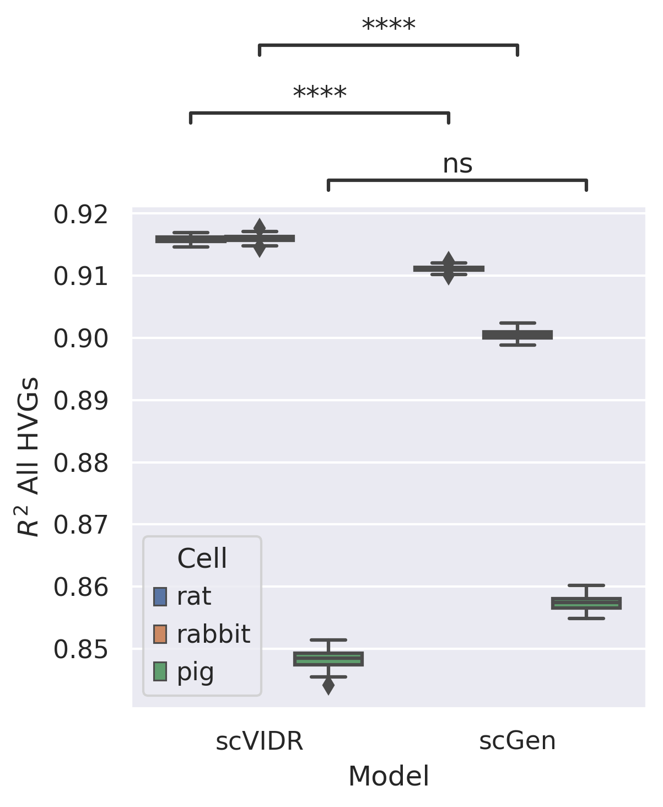

#Create Access to my code
import sys
sys.path.insert(1, '../vidr/')
#Import hte vaedr functions we have created
from vidr import VIDR
from PCAEval import PCAEval
from utils import *
#Import important modules
import scanpy as sc
import pandas as pd
import numpy as np
import torch
import seaborn as sns
from scipy import stats
from scipy import linalg
from scipy import spatial
from anndata import AnnData
from scipy import sparse
from statannotations.Annotator import Annotator
from matplotlib import pyplot as plt
from sklearn.ensemble import RandomForestRegressor
#For calculating statistical distance
import geomloss
import pykeops
import pykeops
pykeops.clean_pykeops() # just in case old build files are still present
pykeops.test_numpy_bindings() # perform the compilation
import warnings
warnings.filterwarnings("ignore")
sc.set_figure_params(dpi = 150, frameon = True)
sns.set_style("dark")
sc.settings.figdir = "../figures"
[KeOps] /mnt/home/kanaomar/.cache/keops2.1.1/build_CUDA_VISIBLE_DEVICES_0_1_2_3 has been cleaned.
[KeOps] Compiling cuda jit compiler engine ... OK
[pyKeOps] Compiling nvrtc binder for python ... OK
[KeOps] Generating code for formula Sum_Reduction((Var(0,3,0)-Var(1,3,1))|(Var(0,3,0)-Var(1,3,1)),1) ... OK
pyKeOps with numpy bindings is working!
adata = sc.read_h5ad("../data/train_species.h5ad")
adata
AnnData object with n_obs × n_vars = 62114 × 6619
obs: 'condition', 'species', 'individual', 'batch', 'louvain', 'n_counts'
var: 'gene_ids-0-0-0-0', 'gene_ids-1-0-0-0', 'gene_ids-2-0-0-0', 'gene_ids-0-1-0-0', 'gene_ids-1-1-0-0', 'gene_ids-2-1-0-0', 'gene_ids-0-0-1-0', 'gene_ids-1-0-1-0', 'gene_ids-2-0-1-0', 'gene_ids-0-1-1-0', 'gene_ids-1-1-1-0', 'gene_ids-2-1-1-0', 'gene_ids-3-1-1-0', 'gene_ids-0-0-0-1', 'gene_ids-1-0-0-1', 'gene_ids-2-0-0-1', 'gene_ids-0-1-0-1', 'gene_ids-1-1-0-1', 'gene_ids-2-1-0-1', 'gene_ids-0-0-1-1', 'gene_ids-1-0-1-1', 'gene_ids-2-0-1-1', 'gene_ids-0-1-1-1', 'gene_ids-1-1-1-1', 'gene_ids-2-1-1-1'
uns: 'condition_colors', 'neighbors', 'species_colors'
obsm: 'X_pca', 'X_umap'
obsp: 'distances', 'connectivities'
adata.obs.species
index
AAACCTGTCGGTCTAA-1-0-0-0-0 rabbit
AAACCTGTCTGTCCGT-1-0-0-0-0 rabbit
AAACGGGAGCCGATTT-1-0-0-0-0 rabbit
AAACGGGAGGCGCTCT-1-0-0-0-0 rabbit
AAACGGGCACAACGCC-1-0-0-0-0 rabbit
...
TTTGGTTGTGGGTATG-1-2-1-1-1 mouse
TTTGTCAAGCCCTAAT-1-2-1-1-1 mouse
TTTGTCAAGCTAAACA-1-2-1-1-1 mouse
TTTGTCACAGTTTACG-1-2-1-1-1 mouse
TTTGTCATCCGTTGTC-1-2-1-1-1 mouse
Name: species, Length: 62114, dtype: category
Categories (4, object): ['mouse', 'pig', 'rabbit', 'rat']
# #Training model
# for cell in ["rat", "rabbit", "pig"]:
# train_adata, test_adata = prepare_data(adata, "species", "condition", cell, "LPS6", normalized = True)
# vae = VIDR(train_adata, linear_decoder = False)
# vae.train(
# max_epochs=100,
# batch_size=128,
# early_stopping=True,
# early_stopping_patience=25)
# vae.save(f"../../data/VAE_Species_Prediction_LPS_7000g_{cell}.pt", overwrite = True)
cell = "rat"
train_adata, test_adata = prepare_data(adata, "species", "condition", cell, "LPS6", normalized = True)
vae = VIDR(train_adata, linear_decoder = False)
vae = vae.load(f"../../data/VAE_Species_Prediction_LPS_7000g_{cell}.pt/", train_adata)
[34mINFO [0m Using batches from adata.obs[1m[[0m[32m"condition"[0m[1m][0m
[34mINFO [0m Using labels from adata.obs[1m[[0m[32m"species"[0m[1m][0m
[34mINFO [0m Using data from adata.X
[34mINFO [0m Computing library size prior per batch
[34mINFO [0m Successfully registered anndata object containing [1;36m52691[0m cells, [1;36m6619[0m vars, [1;36m2[0m batches, [1;36m4[0m labels, and [1;36m0[0m
proteins. Also registered [1;36m0[0m extra categorical covariates and [1;36m0[0m extra continuous covariates.
[34mINFO [0m Please do not further modify adata until model is trained.
None
[34mINFO [0m Using data from adata.X
[34mINFO [0m Computing library size prior per batch
[34mINFO [0m Registered keys:[1m[[0m[32m'X'[0m, [32m'batch_indices'[0m, [32m'local_l_mean'[0m, [32m'local_l_var'[0m, [32m'labels'[0m[1m][0m
[34mINFO [0m Successfully registered anndata object containing [1;36m52691[0m cells, [1;36m6619[0m vars, [1;36m2[0m batches, [1;36m4[0m labels, and [1;36m0[0m
proteins. Also registered [1;36m0[0m extra categorical covariates and [1;36m0[0m extra continuous covariates.
None
jaccard_similarity = lambda x, y: len(set(x) & set(y))/len(set(x) | set(y))
C = adata.obs.species.unique().shape[0]
jaccard_mat = np.zeros([C,C])
all_cts = adata.obs.species.unique()
for idx, cell_i in enumerate(all_cts):
CD4T = adata[adata.obs["species"] ==cell_i]
sc.tl.rank_genes_groups(CD4T, groupby="condition", method="wilcoxon")
diff_genes_i = CD4T.uns["rank_genes_groups"]["names"]["LPS6"][:100]
for jdx, cell_j in enumerate(all_cts):
print(cell_i, cell_j)
CD4T = adata[adata.obs["species"] ==cell_j]
sc.tl.rank_genes_groups(CD4T, groupby="condition", method="wilcoxon")
diff_genes_j = CD4T.uns["rank_genes_groups"]["names"]["LPS6"][:100]
sim = jaccard_similarity(diff_genes_i, diff_genes_j)
jaccard_mat[idx, jdx] = sim
rabbit rabbit
rabbit pig
rabbit rat
rabbit mouse
pig rabbit
pig pig
pig rat
pig mouse
rat rabbit
rat pig
rat rat
rat mouse
mouse rabbit
mouse pig
mouse rat
mouse mouse
sns.clustermap(data = jaccard_mat, xticklabels = all_cts, yticklabels = all_cts, vmin = 0)
<seaborn.matrix.ClusterGrid at 0x2ba51e866400>
jaccard_list = []
for idx, cell_i in enumerate(all_cts):
CD4T = adata[adata.obs["species"] ==cell_i]
sc.tl.rank_genes_groups(CD4T, groupby="condition", method="wilcoxon")
diff_genes_i = CD4T.uns["rank_genes_groups"]["names"]["LPS6"][:100]
for jdx, cell_j in enumerate(all_cts):
print(cell_i, cell_j)
CD4T = adata[adata.obs["species"] ==cell_j]
sc.tl.rank_genes_groups(CD4T, groupby="condition", method="wilcoxon")
diff_genes_j = CD4T.uns["rank_genes_groups"]["names"]["LPS6"][:100]
sim = jaccard_similarity(diff_genes_i, diff_genes_j)
jaccard_list.append([cell_i, cell_j, sim])
rabbit rabbit
rabbit pig
rabbit rat
rabbit mouse
pig rabbit
pig pig
pig rat
pig mouse
rat rabbit
rat pig
rat rat
rat mouse
mouse rabbit
mouse pig
mouse rat
mouse mouse
jaccard_df_narrow = pd.DataFrame(jaccard_list, columns = ["Cell Type", "Cell B", "Jaccard Similarity"])
filt_df = jaccard_df_narrow[jaccard_df_narrow["Jaccard Similarity"] != 1]
sns.barplot(x = "Cell Type", y = "Jaccard Similarity", data = filt_df)
plt.xticks(rotation = 90)
plt.xlabel("Species")
Text(0.5, 0, 'Species')

#UMAP Projection of latent space
latent_X = vae.get_latent_representation(adata)
latent_adata = sc.AnnData(X=latent_X, obs=adata.obs.copy())
[34mINFO [0m Input adata not setup with scvi. attempting to transfer anndata setup
[34mINFO [0m Using data from adata.X
[34mINFO [0m Computing library size prior per batch
[34mINFO [0m Registered keys:[1m[[0m[32m'X'[0m, [32m'batch_indices'[0m, [32m'local_l_mean'[0m, [32m'local_l_var'[0m, [32m'labels'[0m[1m][0m
[34mINFO [0m Successfully registered anndata object containing [1;36m62114[0m cells, [1;36m6619[0m vars, [1;36m2[0m batches, [1;36m4[0m labels, and [1;36m0[0m
proteins. Also registered [1;36m0[0m extra categorical covariates and [1;36m0[0m extra continuous covariates.
sc.pp.neighbors(latent_adata)
sc.tl.umap(latent_adata)
WARNING: You’re trying to run this on 100 dimensions of `.X`, if you really want this, set `use_rep='X'`.
Falling back to preprocessing with `sc.pp.pca` and default params.
latent_adata.obs["Training Split"] = ["Test" if ((i == "rat") & (j == "LPS6")) else "Train" for i, j in zip(latent_adata.obs["species"], latent_adata.obs["condition"])]
ax = sc.pl.umap(
latent_adata,
color = ["species"],
wspace = 0.45,
title = "Species"
)
ax = sc.pl.umap(
latent_adata,
color = ["condition"],
wspace = 0.45,
title = "Condition"
)
ax = sc.pl.umap(
latent_adata,
color = ["Training Split"],
palette = "Dark2",
wspace = 0.45
)

ctrl_key = "unst"
treat_key = "LPS6"
cell_type_to_predict = "rat"
cell_type_key = vae.scvi_setup_dict_["categorical_mappings"]["_scvi_labels"][
"original_key"
]
treatment_key = vae.scvi_setup_dict_["categorical_mappings"]["_scvi_batch"][
"original_key"
]
vae.adata.obs["species_condition"] = adata.obs.species.astype(str) + adata.obs.condition.astype(str)
adata_bal = random_sample(vae.adata, "species_condition", "min")
adata_bal_ctrl = adata_bal[(adata_bal.obs[cell_type_key] == cell_type_to_predict) & (adata_bal.obs[treatment_key] == ctrl_key)]
latent_bal = vae.get_latent_representation(adata_bal)
latent_bal_adata = sc.AnnData(X=latent_bal, obs = adata_bal.obs.copy())
latent_cd = latent_bal_adata[(latent_bal_adata.obs[cell_type_key] == cell_type_to_predict) & (latent_bal_adata.obs[treatment_key] == ctrl_key)].X
#Get deltas and control centroids for each cell tpye in the training dataset
deltas = []
latent_centroids = []
cell_types = np.unique(latent_adata.obs[cell_type_key])
for cell_i in cell_types:
if cell_i != cell_type_to_predict:
latent_ctrl = latent_bal_adata[(latent_bal_adata.obs[cell_type_key] == cell_i) & (latent_bal_adata.obs[treatment_key] == ctrl_key)].X
latent_treat = latent_bal_adata[(latent_bal_adata.obs[cell_type_key] == cell_i) & (latent_bal_adata.obs[treatment_key] == treat_key)].X
deltas_i = np.average(latent_treat, axis = 0) - np.average(latent_ctrl, axis = 0)
deltas.append(deltas_i)
latent_centroids.append(np.average(latent_ctrl, axis = 0))
lr = LinearRegression()
reg = lr.fit(latent_centroids, deltas)
scvidr_delta = reg.predict([np.average(latent_cd, axis = 0)])[0]
scVIDR Rat Results¶
treat_pred = scvidr_delta + latent_cd
predicted_cells = vae.module.generative(torch.Tensor(treat_pred))["px"].cpu().detach().numpy()
pred = sc.AnnData(X=predicted_cells , obs=adata_bal_ctrl.obs.copy(), var=adata_bal_ctrl.var.copy(),obsm=adata_bal_ctrl.obsm.copy(),)
pred.obs["condition"] = 'pred'
ctrl_adata = adata[((adata.obs['species'] == cell) & (adata.obs["condition"] == "unst"))]
treat_adata = adata[((adata.obs['species'] == cell) & (adata.obs["condition"] == "LPS6"))]
eval_adata2 = ctrl_adata.concatenate(treat_adata, pred)
treatments = []
for i in eval_adata2.obs["condition"]:
if i == 'unst':
treatments.append("Control")
elif i == "LPS6":
treatments.append("LPS6")
else:
treatments.append("scVIDR")
eval_adata2.obs["Treatment"] = treatments
sc.tl.pca(eval_adata2)
sc.pl.pca(eval_adata2, color = "Treatment", frameon = True, title = "", save = "SF8B1.svg")
CD4T = adata[adata.obs["species"] ==cell]
sc.tl.rank_genes_groups(CD4T, groupby="condition", method="wilcoxon")
diff_genes = CD4T.uns["rank_genes_groups"]["names"]["LPS6"]
r2_value = vae.reg_mean_plot(
eval_adata2,
axis_keys={"x": "pred", "y": "LPS6"},
gene_list=diff_genes[:10],
top_100_genes = diff_genes[:100],
labels={"x": "Predicted Expression", "y": "Real Expression"},
path_to_save="../figures/SF8C1.svg",
show=True,
legend=False, title = "scVIDR")
WARNING: saving figure to file ../figures/pcaSF8B1.svg


scGen Cross Species Results¶
latent_mouse_cd = latent_bal_adata[(latent_bal_adata.obs[cell_type_key] == "mouse") & (latent_bal_adata.obs[treatment_key] == ctrl_key)].X
latent_mouse_trt = latent_bal_adata[(latent_bal_adata.obs[cell_type_key] == "mouse") & (latent_bal_adata.obs[treatment_key] == treat_key)].X
scgen_treat_delta = np.average(latent_mouse_trt,axis=0) - np.average(latent_mouse_cd,axis=0)
scgen_species_delta = np.average(latent_cd,axis=0) - np.average(latent_mouse_cd,axis=0)
treat_pred = 0.5*(scgen_species_delta + latent_mouse_trt + scgen_treat_delta + latent_cd)
predicted_cells = vae.module.generative(torch.Tensor(treat_pred))["px"].cpu().detach().numpy()
pred = sc.AnnData(X=predicted_cells , obs=adata_bal_ctrl.obs.copy(), var=adata_bal_ctrl.var.copy(),obsm=adata_bal_ctrl.obsm.copy(),)
pred.obs["condition"] = 'pred'
ctrl_adata = adata[((adata.obs['species'] == cell) & (adata.obs["condition"] == "unst"))]
treat_adata = adata[((adata.obs['species'] == cell) & (adata.obs["condition"] == "LPS6"))]
eval_adata2 = ctrl_adata.concatenate(treat_adata, pred)
treatments = []
for i in eval_adata2.obs["condition"]:
if i == 'unst':
treatments.append("Control")
elif i == "LPS6":
treatments.append("LPS6")
else:
treatments.append("scGen")
eval_adata2.obs["Treatment"] = treatments
sc.tl.pca(eval_adata2)
sc.pl.pca(eval_adata2, color = "Treatment", frameon = True, title = "", save = "SF8B2.svg")
CD4T = adata[adata.obs["species"] ==cell]
sc.tl.rank_genes_groups(CD4T, groupby="condition", method="wilcoxon")
diff_genes = CD4T.uns["rank_genes_groups"]["names"]["LPS6"]
r2_value = vae.reg_mean_plot(
eval_adata2,
axis_keys={"x": "pred", "y": "LPS6"},
gene_list=diff_genes[:10],
top_100_genes = diff_genes[:100],
labels={"x": "Predicted Expression", "y": "Real Expression"},
path_to_save="../figures/SF8C2.svg",
show=True,
legend=False, title = "scGen")
WARNING: saving figure to file ../figures/pcaSF8B2.svg


scGen Results with Average Delta¶
latent_ctrl = latent_bal_adata[(latent_bal_adata.obs[treatment_key] == ctrl_key)].X
latent_treat = latent_bal_adata[(latent_bal_adata.obs[treatment_key] == treat_key)].X
scgen_delta = np.average(latent_treat, axis = 0) - np.average(latent_ctrl, axis = 0)
# latent_bal_adata[(latent_bal_adata.obs[treatment_key] == treat_key)].obs.species_condition.unique()
treat_pred = scgen_delta + latent_cd
predicted_cells = vae.module.generative(torch.Tensor(treat_pred))["px"].cpu().detach().numpy()
pred = sc.AnnData(X=predicted_cells , obs=adata_bal_ctrl.obs.copy(), var=adata_bal_ctrl.var.copy(),obsm=adata_bal_ctrl.obsm.copy(),)
pred.obs["condition"] = 'pred'
ctrl_adata = adata[((adata.obs['species'] == cell) & (adata.obs["condition"] == "unst"))]
treat_adata = adata[((adata.obs['species'] == cell) & (adata.obs["condition"] == "LPS6"))]
eval_adata2 = ctrl_adata.concatenate(treat_adata, pred)
treatments = []
for i in eval_adata2.obs["condition"]:
if i == 'unst':
treatments.append("Control")
elif i == "LPS6":
treatments.append("LPS6")
else:
treatments.append("scGen")
eval_adata2.obs["Treatment"] = treatments
sc.tl.pca(eval_adata2)
sc.pl.pca(eval_adata2, color = "Treatment", frameon = True, title = "", save = "SF8B2.svg")
CD4T = adata[adata.obs["species"] ==cell]
sc.tl.rank_genes_groups(CD4T, groupby="condition", method="wilcoxon")
diff_genes = CD4T.uns["rank_genes_groups"]["names"]["LPS6"]
r2_value = vae.reg_mean_plot(
eval_adata2,
axis_keys={"x": "pred", "y": "LPS6"},
gene_list=diff_genes[:10],
top_100_genes = None,
labels={"x": "Predicted Expression", "y": "Real Expression"},
path_to_save="../figures/SF8C2.svg",
show=True,
legend=False, title = "scGen")
WARNING: saving figure to file ../figures/pcaSF8B2.svg


scPreGAN Results¶
from scPreGAN import *
gan = Model(n_features=adata.X.shape[1], use_cuda=True)
train_data = gan.load_anndata(data_path="../data/train_species.h5ad",
condition_key="condition",
condition={"control":"unst", "case":"LPS6"},
cell_type_key="species",
out_of_sample_prediction = True,
prediction_cell_type=cell
)
Random Seed: 3060
Successfully created the model
Successfully loaded the model
# #Training scPreGan
# gan.train(train_data = train_data)
# torch.save(gan.D_A.state_dict(), "../data/gan_da_rat.pt")
# torch.save(gan.D_B.state_dict(), "../data/gan_db_rat.pt")
# torch.save(gan.G_A.state_dict(), "../data/gan_ga_rat.pt")
# torch.save(gan.G_B.state_dict(), "../data/gan_gb_rat.pt")
# torch.save(gan.E.state_dict(), "../data/gan_e_rat.pt")
[100/20000] adv_loss: -0.0238 recon_loss: 0.3465 encoding_loss: 0.0103 G_loss: 0.3330 D_A_loss: -108.1751 D_B_loss: -108.4284
[200/20000] adv_loss: -0.0382 recon_loss: 0.2965 encoding_loss: 0.0043 G_loss: 0.2626 D_A_loss: -93.5066 D_B_loss: -89.2510
[300/20000] adv_loss: -0.0352 recon_loss: 0.2698 encoding_loss: 0.0036 G_loss: 0.2381 D_A_loss: -84.6317 D_B_loss: -83.2130
[400/20000] adv_loss: -0.0327 recon_loss: 0.2668 encoding_loss: 0.0025 G_loss: 0.2366 D_A_loss: -78.1662 D_B_loss: -74.5129
[500/20000] adv_loss: -0.0302 recon_loss: 0.2525 encoding_loss: 0.0019 G_loss: 0.2242 D_A_loss: -73.4822 D_B_loss: -70.3501
[600/20000] adv_loss: -0.0206 recon_loss: 0.2416 encoding_loss: 0.0022 G_loss: 0.2232 D_A_loss: -69.2881 D_B_loss: -64.7405
[700/20000] adv_loss: -0.0243 recon_loss: 0.2421 encoding_loss: 0.0021 G_loss: 0.2200 D_A_loss: -63.4964 D_B_loss: -60.3896
[800/20000] adv_loss: -0.0142 recon_loss: 0.2307 encoding_loss: 0.0016 G_loss: 0.2180 D_A_loss: -58.9558 D_B_loss: -55.5171
[900/20000] adv_loss: -0.0167 recon_loss: 0.2193 encoding_loss: 0.0016 G_loss: 0.2042 D_A_loss: -53.7842 D_B_loss: -51.2267
[1000/20000] adv_loss: -0.0172 recon_loss: 0.2086 encoding_loss: 0.0015 G_loss: 0.1929 D_A_loss: -49.7916 D_B_loss: -47.0637
[1100/20000] adv_loss: -0.0074 recon_loss: 0.2126 encoding_loss: 0.0022 G_loss: 0.2073 D_A_loss: -48.4547 D_B_loss: -43.4780
[1200/20000] adv_loss: -0.0105 recon_loss: 0.2044 encoding_loss: 0.0017 G_loss: 0.1956 D_A_loss: -44.4699 D_B_loss: -41.5969
[1300/20000] adv_loss: -0.0097 recon_loss: 0.1957 encoding_loss: 0.0014 G_loss: 0.1873 D_A_loss: -42.3269 D_B_loss: -37.2285
[1400/20000] adv_loss: 0.0031 recon_loss: 0.2031 encoding_loss: 0.0048 G_loss: 0.2109 D_A_loss: -39.1141 D_B_loss: -36.2893
[1500/20000] adv_loss: -0.0001 recon_loss: 0.1947 encoding_loss: 0.0015 G_loss: 0.1960 D_A_loss: -36.5831 D_B_loss: -32.9490
[1600/20000] adv_loss: 0.0046 recon_loss: 0.1814 encoding_loss: 0.0026 G_loss: 0.1887 D_A_loss: -33.1014 D_B_loss: -31.7685
[1700/20000] adv_loss: 0.0033 recon_loss: 0.1914 encoding_loss: 0.0017 G_loss: 0.1964 D_A_loss: -30.6015 D_B_loss: -29.7046
[1800/20000] adv_loss: 0.0028 recon_loss: 0.1838 encoding_loss: 0.0016 G_loss: 0.1882 D_A_loss: -27.2895 D_B_loss: -27.7060
[1900/20000] adv_loss: 0.0073 recon_loss: 0.1853 encoding_loss: 0.0012 G_loss: 0.1938 D_A_loss: -25.7496 D_B_loss: -27.4963
[2000/20000] adv_loss: 0.0120 recon_loss: 0.1801 encoding_loss: 0.0017 G_loss: 0.1938 D_A_loss: -23.0978 D_B_loss: -25.4080
[2100/20000] adv_loss: 0.0227 recon_loss: 0.1789 encoding_loss: 0.0014 G_loss: 0.2030 D_A_loss: -23.0014 D_B_loss: -24.6750
[2200/20000] adv_loss: 0.0122 recon_loss: 0.1785 encoding_loss: 0.0015 G_loss: 0.1923 D_A_loss: -18.0069 D_B_loss: -24.2036
[2300/20000] adv_loss: 0.0081 recon_loss: 0.1817 encoding_loss: 0.0012 G_loss: 0.1910 D_A_loss: -16.8236 D_B_loss: -21.8153
[2400/20000] adv_loss: 0.0068 recon_loss: 0.1802 encoding_loss: 0.0016 G_loss: 0.1886 D_A_loss: -15.7430 D_B_loss: -22.1690
[2500/20000] adv_loss: 0.0139 recon_loss: 0.1768 encoding_loss: 0.0013 G_loss: 0.1921 D_A_loss: -14.6871 D_B_loss: -21.7059
[2600/20000] adv_loss: 0.0213 recon_loss: 0.1827 encoding_loss: 0.0016 G_loss: 0.2056 D_A_loss: -14.1933 D_B_loss: -21.2217
[2700/20000] adv_loss: 0.0211 recon_loss: 0.1820 encoding_loss: 0.0019 G_loss: 0.2051 D_A_loss: -13.6804 D_B_loss: -20.8790
[2800/20000] adv_loss: 0.0216 recon_loss: 0.1780 encoding_loss: 0.0014 G_loss: 0.2010 D_A_loss: -12.3563 D_B_loss: -19.8406
[2900/20000] adv_loss: 0.0245 recon_loss: 0.1719 encoding_loss: 0.0020 G_loss: 0.1983 D_A_loss: -13.1034 D_B_loss: -21.5601
[3000/20000] adv_loss: 0.0248 recon_loss: 0.1689 encoding_loss: 0.0021 G_loss: 0.1958 D_A_loss: -12.4081 D_B_loss: -19.2791
[3100/20000] adv_loss: 0.0251 recon_loss: 0.1713 encoding_loss: 0.0019 G_loss: 0.1983 D_A_loss: -11.9336 D_B_loss: -19.8580
[3200/20000] adv_loss: 0.0359 recon_loss: 0.1696 encoding_loss: 0.0020 G_loss: 0.2075 D_A_loss: -13.0851 D_B_loss: -19.3289
[3300/20000] adv_loss: 0.0331 recon_loss: 0.1698 encoding_loss: 0.0015 G_loss: 0.2044 D_A_loss: -11.5174 D_B_loss: -20.3864
[3400/20000] adv_loss: 0.0299 recon_loss: 0.1761 encoding_loss: 0.0021 G_loss: 0.2082 D_A_loss: -12.2965 D_B_loss: -19.8114
[3500/20000] adv_loss: 0.0365 recon_loss: 0.1668 encoding_loss: 0.0020 G_loss: 0.2054 D_A_loss: -12.1880 D_B_loss: -20.8127
[3600/20000] adv_loss: 0.0446 recon_loss: 0.1778 encoding_loss: 0.0018 G_loss: 0.2241 D_A_loss: -12.9537 D_B_loss: -20.7383
[3700/20000] adv_loss: 0.0391 recon_loss: 0.1748 encoding_loss: 0.0018 G_loss: 0.2158 D_A_loss: -12.7856 D_B_loss: -20.0384
[3800/20000] adv_loss: 0.0394 recon_loss: 0.1797 encoding_loss: 0.0027 G_loss: 0.2217 D_A_loss: -11.5444 D_B_loss: -20.3644
[3900/20000] adv_loss: 0.0469 recon_loss: 0.1769 encoding_loss: 0.0020 G_loss: 0.2258 D_A_loss: -12.6670 D_B_loss: -21.0934
[4000/20000] adv_loss: 0.0413 recon_loss: 0.1684 encoding_loss: 0.0015 G_loss: 0.2113 D_A_loss: -12.4237 D_B_loss: -21.4957
[4100/20000] adv_loss: 0.0453 recon_loss: 0.1784 encoding_loss: 0.0015 G_loss: 0.2252 D_A_loss: -12.1669 D_B_loss: -20.0435
[4200/20000] adv_loss: 0.0486 recon_loss: 0.1909 encoding_loss: 0.0017 G_loss: 0.2412 D_A_loss: -12.8943 D_B_loss: -21.8133
[4300/20000] adv_loss: 0.0462 recon_loss: 0.1792 encoding_loss: 0.0024 G_loss: 0.2277 D_A_loss: -12.5277 D_B_loss: -21.3984
[4400/20000] adv_loss: 0.0529 recon_loss: 0.1695 encoding_loss: 0.0018 G_loss: 0.2242 D_A_loss: -13.2052 D_B_loss: -21.8325
[4500/20000] adv_loss: 0.0513 recon_loss: 0.1768 encoding_loss: 0.0018 G_loss: 0.2299 D_A_loss: -12.3329 D_B_loss: -21.5632
[4600/20000] adv_loss: 0.0536 recon_loss: 0.1710 encoding_loss: 0.0020 G_loss: 0.2266 D_A_loss: -13.0512 D_B_loss: -21.6949
[4700/20000] adv_loss: 0.0534 recon_loss: 0.1695 encoding_loss: 0.0017 G_loss: 0.2246 D_A_loss: -12.6687 D_B_loss: -21.5501
[4800/20000] adv_loss: 0.0521 recon_loss: 0.1724 encoding_loss: 0.0019 G_loss: 0.2264 D_A_loss: -12.5512 D_B_loss: -21.9120
[4900/20000] adv_loss: 0.0558 recon_loss: 0.2056 encoding_loss: 0.0019 G_loss: 0.2634 D_A_loss: -12.3539 D_B_loss: -21.5966
[5000/20000] adv_loss: 0.0538 recon_loss: 0.1806 encoding_loss: 0.0018 G_loss: 0.2363 D_A_loss: -11.7618 D_B_loss: -20.3047
[5100/20000] adv_loss: 0.0556 recon_loss: 0.1780 encoding_loss: 0.0019 G_loss: 0.2355 D_A_loss: -11.9076 D_B_loss: -22.2701
[5200/20000] adv_loss: 0.0541 recon_loss: 0.1715 encoding_loss: 0.0023 G_loss: 0.2279 D_A_loss: -12.6001 D_B_loss: -22.1283
[5300/20000] adv_loss: 0.0590 recon_loss: 0.1835 encoding_loss: 0.0026 G_loss: 0.2451 D_A_loss: -12.3211 D_B_loss: -21.4763
[5400/20000] adv_loss: 0.0584 recon_loss: 0.1840 encoding_loss: 0.0017 G_loss: 0.2440 D_A_loss: -12.1296 D_B_loss: -22.1303
[5500/20000] adv_loss: 0.0568 recon_loss: 0.1682 encoding_loss: 0.0014 G_loss: 0.2264 D_A_loss: -11.9058 D_B_loss: -21.7852
[5600/20000] adv_loss: 0.0578 recon_loss: 0.1708 encoding_loss: 0.0017 G_loss: 0.2302 D_A_loss: -12.2129 D_B_loss: -21.5865
[5700/20000] adv_loss: 0.0532 recon_loss: 0.1652 encoding_loss: 0.0017 G_loss: 0.2201 D_A_loss: -11.8861 D_B_loss: -21.3832
[5800/20000] adv_loss: 0.0592 recon_loss: 0.1800 encoding_loss: 0.0015 G_loss: 0.2407 D_A_loss: -11.8592 D_B_loss: -22.5028
[5900/20000] adv_loss: 0.0611 recon_loss: 0.1724 encoding_loss: 0.0018 G_loss: 0.2353 D_A_loss: -12.1742 D_B_loss: -21.7796
[6000/20000] adv_loss: 0.0581 recon_loss: 0.1852 encoding_loss: 0.0015 G_loss: 0.2447 D_A_loss: -12.2476 D_B_loss: -20.6969
[6100/20000] adv_loss: 0.0574 recon_loss: 0.1685 encoding_loss: 0.0015 G_loss: 0.2274 D_A_loss: -11.6020 D_B_loss: -21.1404
[6200/20000] adv_loss: 0.0557 recon_loss: 0.1648 encoding_loss: 0.0013 G_loss: 0.2218 D_A_loss: -11.5391 D_B_loss: -21.7059
[6300/20000] adv_loss: 0.0552 recon_loss: 0.1747 encoding_loss: 0.0022 G_loss: 0.2321 D_A_loss: -12.2373 D_B_loss: -22.0071
[6400/20000] adv_loss: 0.0548 recon_loss: 0.1797 encoding_loss: 0.0019 G_loss: 0.2364 D_A_loss: -12.1547 D_B_loss: -20.7848
[6500/20000] adv_loss: 0.0532 recon_loss: 0.1607 encoding_loss: 0.0019 G_loss: 0.2158 D_A_loss: -12.1215 D_B_loss: -21.3225
[6600/20000] adv_loss: 0.0538 recon_loss: 0.1740 encoding_loss: 0.0016 G_loss: 0.2294 D_A_loss: -12.9073 D_B_loss: -22.5973
[6700/20000] adv_loss: 0.0535 recon_loss: 0.1682 encoding_loss: 0.0012 G_loss: 0.2229 D_A_loss: -11.5948 D_B_loss: -22.3586
[6800/20000] adv_loss: 0.0605 recon_loss: 0.1753 encoding_loss: 0.0012 G_loss: 0.2370 D_A_loss: -11.5107 D_B_loss: -21.3939
[6900/20000] adv_loss: 0.0495 recon_loss: 0.1642 encoding_loss: 0.0016 G_loss: 0.2153 D_A_loss: -11.3190 D_B_loss: -21.5034
[7000/20000] adv_loss: 0.0492 recon_loss: 0.1729 encoding_loss: 0.0015 G_loss: 0.2236 D_A_loss: -10.7056 D_B_loss: -21.3990
[7100/20000] adv_loss: 0.0513 recon_loss: 0.1684 encoding_loss: 0.0015 G_loss: 0.2212 D_A_loss: -11.9519 D_B_loss: -21.0379
[7200/20000] adv_loss: 0.0475 recon_loss: 0.1684 encoding_loss: 0.0013 G_loss: 0.2172 D_A_loss: -11.7898 D_B_loss: -19.9595
[7300/20000] adv_loss: 0.0474 recon_loss: 0.1623 encoding_loss: 0.0016 G_loss: 0.2113 D_A_loss: -11.8793 D_B_loss: -20.9907
[7400/20000] adv_loss: 0.0469 recon_loss: 0.1792 encoding_loss: 0.0013 G_loss: 0.2273 D_A_loss: -11.8935 D_B_loss: -20.1690
[7500/20000] adv_loss: 0.0465 recon_loss: 0.1730 encoding_loss: 0.0015 G_loss: 0.2210 D_A_loss: -12.2184 D_B_loss: -21.4691
[7600/20000] adv_loss: 0.0469 recon_loss: 0.1640 encoding_loss: 0.0014 G_loss: 0.2123 D_A_loss: -11.1894 D_B_loss: -20.3001
[7700/20000] adv_loss: 0.0463 recon_loss: 0.1691 encoding_loss: 0.0015 G_loss: 0.2169 D_A_loss: -11.3900 D_B_loss: -21.5486
[7800/20000] adv_loss: 0.0454 recon_loss: 0.1744 encoding_loss: 0.0016 G_loss: 0.2215 D_A_loss: -11.6896 D_B_loss: -20.6187
[7900/20000] adv_loss: 0.0460 recon_loss: 0.1786 encoding_loss: 0.0017 G_loss: 0.2263 D_A_loss: -11.4558 D_B_loss: -20.7117
[8000/20000] adv_loss: 0.0413 recon_loss: 0.1665 encoding_loss: 0.0020 G_loss: 0.2098 D_A_loss: -11.4162 D_B_loss: -19.7117
[8100/20000] adv_loss: 0.0420 recon_loss: 0.1609 encoding_loss: 0.0016 G_loss: 0.2046 D_A_loss: -11.7241 D_B_loss: -20.1521
[8200/20000] adv_loss: 0.0450 recon_loss: 0.1668 encoding_loss: 0.0020 G_loss: 0.2138 D_A_loss: -11.6045 D_B_loss: -20.1455
[8300/20000] adv_loss: 0.0402 recon_loss: 0.1731 encoding_loss: 0.0015 G_loss: 0.2149 D_A_loss: -11.4212 D_B_loss: -19.9849
[8400/20000] adv_loss: 0.0406 recon_loss: 0.1678 encoding_loss: 0.0014 G_loss: 0.2098 D_A_loss: -11.7868 D_B_loss: -19.8300
[8500/20000] adv_loss: 0.0405 recon_loss: 0.1648 encoding_loss: 0.0020 G_loss: 0.2073 D_A_loss: -10.8320 D_B_loss: -19.2213
[8600/20000] adv_loss: 0.0402 recon_loss: 0.1709 encoding_loss: 0.0019 G_loss: 0.2130 D_A_loss: -11.3348 D_B_loss: -20.3355
[8700/20000] adv_loss: 0.0410 recon_loss: 0.1671 encoding_loss: 0.0015 G_loss: 0.2096 D_A_loss: -11.6441 D_B_loss: -19.3199
[8800/20000] adv_loss: 0.0379 recon_loss: 0.1740 encoding_loss: 0.0021 G_loss: 0.2140 D_A_loss: -11.8881 D_B_loss: -19.6553
[8900/20000] adv_loss: 0.0432 recon_loss: 0.1773 encoding_loss: 0.0018 G_loss: 0.2223 D_A_loss: -12.2151 D_B_loss: -21.6869
[9000/20000] adv_loss: 0.0394 recon_loss: 0.1639 encoding_loss: 0.0020 G_loss: 0.2052 D_A_loss: -11.4922 D_B_loss: -19.5311
[9100/20000] adv_loss: 0.0391 recon_loss: 0.1754 encoding_loss: 0.0025 G_loss: 0.2170 D_A_loss: -11.4344 D_B_loss: -20.0152
[9200/20000] adv_loss: 0.0395 recon_loss: 0.1729 encoding_loss: 0.0026 G_loss: 0.2150 D_A_loss: -10.6682 D_B_loss: -20.2429
[9300/20000] adv_loss: 0.0366 recon_loss: 0.1664 encoding_loss: 0.0021 G_loss: 0.2050 D_A_loss: -11.9154 D_B_loss: -20.4456
[9400/20000] adv_loss: 0.0358 recon_loss: 0.1666 encoding_loss: 0.0018 G_loss: 0.2042 D_A_loss: -11.9083 D_B_loss: -20.3259
[9500/20000] adv_loss: 0.0375 recon_loss: 0.1801 encoding_loss: 0.0031 G_loss: 0.2208 D_A_loss: -11.4016 D_B_loss: -19.6480
[9600/20000] adv_loss: 0.0350 recon_loss: 0.1813 encoding_loss: 0.0021 G_loss: 0.2184 D_A_loss: -12.2340 D_B_loss: -20.0809
[9700/20000] adv_loss: 0.0327 recon_loss: 0.1709 encoding_loss: 0.0024 G_loss: 0.2059 D_A_loss: -11.8934 D_B_loss: -20.2570
[9800/20000] adv_loss: 0.0357 recon_loss: 0.1629 encoding_loss: 0.0023 G_loss: 0.2008 D_A_loss: -11.5790 D_B_loss: -20.6521
[9900/20000] adv_loss: 0.0321 recon_loss: 0.1661 encoding_loss: 0.0022 G_loss: 0.2004 D_A_loss: -11.4205 D_B_loss: -19.7638
[10000/20000] adv_loss: 0.0350 recon_loss: 0.1704 encoding_loss: 0.0018 G_loss: 0.2073 D_A_loss: -11.7917 D_B_loss: -21.1067
[10100/20000] adv_loss: 0.0359 recon_loss: 0.1638 encoding_loss: 0.0021 G_loss: 0.2018 D_A_loss: -12.3479 D_B_loss: -19.1138
[10200/20000] adv_loss: 0.0339 recon_loss: 0.1625 encoding_loss: 0.0019 G_loss: 0.1983 D_A_loss: -10.9133 D_B_loss: -19.8377
[10300/20000] adv_loss: 0.0325 recon_loss: 0.1817 encoding_loss: 0.0019 G_loss: 0.2161 D_A_loss: -11.8474 D_B_loss: -20.7530
[10400/20000] adv_loss: 0.0302 recon_loss: 0.1761 encoding_loss: 0.0021 G_loss: 0.2084 D_A_loss: -11.3460 D_B_loss: -19.3849
[10500/20000] adv_loss: 0.0342 recon_loss: 0.1656 encoding_loss: 0.0023 G_loss: 0.2021 D_A_loss: -11.1505 D_B_loss: -19.6499
[10600/20000] adv_loss: 0.0315 recon_loss: 0.1692 encoding_loss: 0.0023 G_loss: 0.2030 D_A_loss: -11.6456 D_B_loss: -20.1447
[10700/20000] adv_loss: 0.0312 recon_loss: 0.1770 encoding_loss: 0.0036 G_loss: 0.2118 D_A_loss: -15.2892 D_B_loss: -22.5845
[10800/20000] adv_loss: 0.0275 recon_loss: 0.1752 encoding_loss: 0.0032 G_loss: 0.2059 D_A_loss: -11.3593 D_B_loss: -20.9051
[10900/20000] adv_loss: 0.0265 recon_loss: 0.1718 encoding_loss: 0.0018 G_loss: 0.2001 D_A_loss: -12.7211 D_B_loss: -21.2403
[11000/20000] adv_loss: 0.0271 recon_loss: 0.1670 encoding_loss: 0.0024 G_loss: 0.1964 D_A_loss: -10.9926 D_B_loss: -21.7853
[11100/20000] adv_loss: 0.0284 recon_loss: 0.1738 encoding_loss: 0.0030 G_loss: 0.2052 D_A_loss: -13.0072 D_B_loss: -21.4462
[11200/20000] adv_loss: 0.0281 recon_loss: 0.1744 encoding_loss: 0.0024 G_loss: 0.2049 D_A_loss: -12.0438 D_B_loss: -20.5864
[11300/20000] adv_loss: 0.0257 recon_loss: 0.1662 encoding_loss: 0.0023 G_loss: 0.1942 D_A_loss: -11.5773 D_B_loss: -20.2980
[11400/20000] adv_loss: 0.0287 recon_loss: 0.1738 encoding_loss: 0.0030 G_loss: 0.2055 D_A_loss: -13.6893 D_B_loss: -21.6739
[11500/20000] adv_loss: 0.0264 recon_loss: 0.1684 encoding_loss: 0.0028 G_loss: 0.1976 D_A_loss: -12.7059 D_B_loss: -21.7263
[11600/20000] adv_loss: 0.0261 recon_loss: 0.1630 encoding_loss: 0.0041 G_loss: 0.1932 D_A_loss: -11.7351 D_B_loss: -21.6808
[11700/20000] adv_loss: 0.0266 recon_loss: 0.1662 encoding_loss: 0.0036 G_loss: 0.1965 D_A_loss: -12.3227 D_B_loss: -21.3576
[11800/20000] adv_loss: 0.0240 recon_loss: 0.1752 encoding_loss: 0.0025 G_loss: 0.2016 D_A_loss: -11.8245 D_B_loss: -22.1777
[11900/20000] adv_loss: 0.0250 recon_loss: 0.1670 encoding_loss: 0.0023 G_loss: 0.1942 D_A_loss: -12.7580 D_B_loss: -20.9058
[12000/20000] adv_loss: 0.0266 recon_loss: 0.1716 encoding_loss: 0.0028 G_loss: 0.2010 D_A_loss: -11.5222 D_B_loss: -20.8387
[12100/20000] adv_loss: 0.0239 recon_loss: 0.1673 encoding_loss: 0.0024 G_loss: 0.1935 D_A_loss: -12.5051 D_B_loss: -21.4505
[12200/20000] adv_loss: 0.0235 recon_loss: 0.1609 encoding_loss: 0.0027 G_loss: 0.1870 D_A_loss: -11.5762 D_B_loss: -21.5789
[12300/20000] adv_loss: 0.0317 recon_loss: 0.1892 encoding_loss: 0.0040 G_loss: 0.2250 D_A_loss: -13.7001 D_B_loss: -22.7667
[12400/20000] adv_loss: 0.0259 recon_loss: 0.1778 encoding_loss: 0.0030 G_loss: 0.2067 D_A_loss: -12.8568 D_B_loss: -23.1269
[12500/20000] adv_loss: 0.0262 recon_loss: 0.1816 encoding_loss: 0.0024 G_loss: 0.2102 D_A_loss: -13.0925 D_B_loss: -20.8266
[12600/20000] adv_loss: 0.0223 recon_loss: 0.1750 encoding_loss: 0.0024 G_loss: 0.1998 D_A_loss: -13.2685 D_B_loss: -20.7516
[12700/20000] adv_loss: 0.0238 recon_loss: 0.1651 encoding_loss: 0.0025 G_loss: 0.1915 D_A_loss: -11.7419 D_B_loss: -21.9982
[12800/20000] adv_loss: 0.0282 recon_loss: 0.1745 encoding_loss: 0.0026 G_loss: 0.2052 D_A_loss: -13.2552 D_B_loss: -22.2194
[12900/20000] adv_loss: 0.0255 recon_loss: 0.1773 encoding_loss: 0.0038 G_loss: 0.2066 D_A_loss: -13.7069 D_B_loss: -21.7949
[13000/20000] adv_loss: 0.0272 recon_loss: 0.1736 encoding_loss: 0.0023 G_loss: 0.2031 D_A_loss: -13.0551 D_B_loss: -21.0294
[13100/20000] adv_loss: 0.0239 recon_loss: 0.1691 encoding_loss: 0.0024 G_loss: 0.1954 D_A_loss: -11.4410 D_B_loss: -21.5614
[13200/20000] adv_loss: 0.0240 recon_loss: 0.1765 encoding_loss: 0.0018 G_loss: 0.2023 D_A_loss: -11.4681 D_B_loss: -21.7203
[13300/20000] adv_loss: 0.0243 recon_loss: 0.1790 encoding_loss: 0.0019 G_loss: 0.2052 D_A_loss: -11.7007 D_B_loss: -20.7988
[13400/20000] adv_loss: 0.0255 recon_loss: 0.1660 encoding_loss: 0.0023 G_loss: 0.1938 D_A_loss: -11.6956 D_B_loss: -20.8346
[13500/20000] adv_loss: 0.0250 recon_loss: 0.1715 encoding_loss: 0.0026 G_loss: 0.1991 D_A_loss: -12.8404 D_B_loss: -22.1297
[13600/20000] adv_loss: 0.0255 recon_loss: 0.1718 encoding_loss: 0.0028 G_loss: 0.2001 D_A_loss: -10.6984 D_B_loss: -21.0549
[13700/20000] adv_loss: 0.0253 recon_loss: 0.1679 encoding_loss: 0.0022 G_loss: 0.1955 D_A_loss: -11.5727 D_B_loss: -21.6037
[13800/20000] adv_loss: 0.0251 recon_loss: 0.1766 encoding_loss: 0.0022 G_loss: 0.2039 D_A_loss: -13.0105 D_B_loss: -23.8891
[13900/20000] adv_loss: 0.0223 recon_loss: 0.1657 encoding_loss: 0.0024 G_loss: 0.1904 D_A_loss: -12.4314 D_B_loss: -22.2521
[14000/20000] adv_loss: 0.0231 recon_loss: 0.1635 encoding_loss: 0.0023 G_loss: 0.1889 D_A_loss: -12.1050 D_B_loss: -21.1881
[14100/20000] adv_loss: 0.0241 recon_loss: 0.1634 encoding_loss: 0.0025 G_loss: 0.1900 D_A_loss: -11.2742 D_B_loss: -20.8966
[14200/20000] adv_loss: 0.0310 recon_loss: 0.1773 encoding_loss: 0.0038 G_loss: 0.2121 D_A_loss: -13.9516 D_B_loss: -22.6594
[14300/20000] adv_loss: 0.0238 recon_loss: 0.1765 encoding_loss: 0.0024 G_loss: 0.2026 D_A_loss: -13.0705 D_B_loss: -21.1153
[14400/20000] adv_loss: 0.0270 recon_loss: 0.1706 encoding_loss: 0.0024 G_loss: 0.2001 D_A_loss: -11.5381 D_B_loss: -21.8381
[14500/20000] adv_loss: 0.0248 recon_loss: 0.1709 encoding_loss: 0.0024 G_loss: 0.1980 D_A_loss: -10.7628 D_B_loss: -21.0925
[14600/20000] adv_loss: 0.0256 recon_loss: 0.1690 encoding_loss: 0.0020 G_loss: 0.1966 D_A_loss: -12.3722 D_B_loss: -21.1659
[14700/20000] adv_loss: 0.0233 recon_loss: 0.1672 encoding_loss: 0.0025 G_loss: 0.1930 D_A_loss: -12.2467 D_B_loss: -20.9909
[14800/20000] adv_loss: 0.0284 recon_loss: 0.1745 encoding_loss: 0.0020 G_loss: 0.2049 D_A_loss: -11.7965 D_B_loss: -21.9676
[14900/20000] adv_loss: 0.0277 recon_loss: 0.1746 encoding_loss: 0.0022 G_loss: 0.2046 D_A_loss: -11.1138 D_B_loss: -20.4407
[15000/20000] adv_loss: 0.0257 recon_loss: 0.1714 encoding_loss: 0.0020 G_loss: 0.1991 D_A_loss: -12.1143 D_B_loss: -20.6258
[15100/20000] adv_loss: 0.0237 recon_loss: 0.1746 encoding_loss: 0.0035 G_loss: 0.2018 D_A_loss: -11.1458 D_B_loss: -20.8461
[15200/20000] adv_loss: 0.0307 recon_loss: 0.1718 encoding_loss: 0.0027 G_loss: 0.2052 D_A_loss: -12.9859 D_B_loss: -20.7232
[15300/20000] adv_loss: 0.0274 recon_loss: 0.1814 encoding_loss: 0.0032 G_loss: 0.2120 D_A_loss: -12.3387 D_B_loss: -22.6639
[15400/20000] adv_loss: 0.0243 recon_loss: 0.1686 encoding_loss: 0.0035 G_loss: 0.1964 D_A_loss: -12.3349 D_B_loss: -22.5876
[15500/20000] adv_loss: 0.0274 recon_loss: 0.1726 encoding_loss: 0.0023 G_loss: 0.2023 D_A_loss: -11.2997 D_B_loss: -20.7801
[15600/20000] adv_loss: 0.0289 recon_loss: 0.1663 encoding_loss: 0.0026 G_loss: 0.1978 D_A_loss: -12.0270 D_B_loss: -20.6875
[15700/20000] adv_loss: 0.0252 recon_loss: 0.1698 encoding_loss: 0.0019 G_loss: 0.1968 D_A_loss: -11.7578 D_B_loss: -20.0737
[15800/20000] adv_loss: 0.0241 recon_loss: 0.1662 encoding_loss: 0.0025 G_loss: 0.1928 D_A_loss: -11.8110 D_B_loss: -21.0124
[15900/20000] adv_loss: 0.0251 recon_loss: 0.1640 encoding_loss: 0.0022 G_loss: 0.1913 D_A_loss: -11.3624 D_B_loss: -20.9140
[16000/20000] adv_loss: 0.0270 recon_loss: 0.1680 encoding_loss: 0.0023 G_loss: 0.1973 D_A_loss: -11.9620 D_B_loss: -21.3198
[16100/20000] adv_loss: 0.0270 recon_loss: 0.1699 encoding_loss: 0.0025 G_loss: 0.1994 D_A_loss: -12.3831 D_B_loss: -20.5892
[16200/20000] adv_loss: 0.0282 recon_loss: 0.1677 encoding_loss: 0.0020 G_loss: 0.1978 D_A_loss: -12.7482 D_B_loss: -20.4608
[16300/20000] adv_loss: 0.0313 recon_loss: 0.1781 encoding_loss: 0.0030 G_loss: 0.2124 D_A_loss: -14.2345 D_B_loss: -21.4682
[16400/20000] adv_loss: 0.0257 recon_loss: 0.1717 encoding_loss: 0.0022 G_loss: 0.1997 D_A_loss: -11.6224 D_B_loss: -20.8077
[16500/20000] adv_loss: 0.0304 recon_loss: 0.1739 encoding_loss: 0.0023 G_loss: 0.2065 D_A_loss: -12.2905 D_B_loss: -21.3156
[16600/20000] adv_loss: 0.0289 recon_loss: 0.1680 encoding_loss: 0.0025 G_loss: 0.1993 D_A_loss: -12.4972 D_B_loss: -20.4863
[16700/20000] adv_loss: 0.0307 recon_loss: 0.1738 encoding_loss: 0.0026 G_loss: 0.2071 D_A_loss: -12.2735 D_B_loss: -20.9083
[16800/20000] adv_loss: 0.0262 recon_loss: 0.1704 encoding_loss: 0.0027 G_loss: 0.1993 D_A_loss: -12.9444 D_B_loss: -21.3499
[16900/20000] adv_loss: 0.0247 recon_loss: 0.1768 encoding_loss: 0.0024 G_loss: 0.2039 D_A_loss: -12.4784 D_B_loss: -21.5959
[17000/20000] adv_loss: 0.0254 recon_loss: 0.1695 encoding_loss: 0.0022 G_loss: 0.1972 D_A_loss: -12.1536 D_B_loss: -21.8945
[17100/20000] adv_loss: 0.0272 recon_loss: 0.1648 encoding_loss: 0.0021 G_loss: 0.1941 D_A_loss: -12.0534 D_B_loss: -21.2327
[17200/20000] adv_loss: 0.0273 recon_loss: 0.1741 encoding_loss: 0.0027 G_loss: 0.2040 D_A_loss: -12.3437 D_B_loss: -20.1606
[17300/20000] adv_loss: 0.0320 recon_loss: 0.1755 encoding_loss: 0.0027 G_loss: 0.2102 D_A_loss: -11.9851 D_B_loss: -21.2165
[17400/20000] adv_loss: 0.0264 recon_loss: 0.1605 encoding_loss: 0.0023 G_loss: 0.1892 D_A_loss: -12.0887 D_B_loss: -21.8521
[17500/20000] adv_loss: 0.0304 recon_loss: 0.1706 encoding_loss: 0.0025 G_loss: 0.2035 D_A_loss: -13.8096 D_B_loss: -20.2115
[17600/20000] adv_loss: 0.0292 recon_loss: 0.1685 encoding_loss: 0.0023 G_loss: 0.2000 D_A_loss: -11.6279 D_B_loss: -20.1569
[17700/20000] adv_loss: 0.0278 recon_loss: 0.1705 encoding_loss: 0.0019 G_loss: 0.2003 D_A_loss: -11.3740 D_B_loss: -20.7145
[17800/20000] adv_loss: 0.0303 recon_loss: 0.1672 encoding_loss: 0.0029 G_loss: 0.2004 D_A_loss: -12.6720 D_B_loss: -20.6704
[17900/20000] adv_loss: 0.0284 recon_loss: 0.1759 encoding_loss: 0.0019 G_loss: 0.2062 D_A_loss: -11.6906 D_B_loss: -20.1122
[18000/20000] adv_loss: 0.0283 recon_loss: 0.1770 encoding_loss: 0.0043 G_loss: 0.2095 D_A_loss: -12.6829 D_B_loss: -21.3194
[18100/20000] adv_loss: 0.0302 recon_loss: 0.1707 encoding_loss: 0.0023 G_loss: 0.2032 D_A_loss: -12.5079 D_B_loss: -20.5437
[18200/20000] adv_loss: 0.0272 recon_loss: 0.1652 encoding_loss: 0.0018 G_loss: 0.1943 D_A_loss: -12.0940 D_B_loss: -20.6839
[18300/20000] adv_loss: 0.0316 recon_loss: 0.1830 encoding_loss: 0.0035 G_loss: 0.2180 D_A_loss: -14.7120 D_B_loss: -21.7434
[18400/20000] adv_loss: 0.0279 recon_loss: 0.1719 encoding_loss: 0.0022 G_loss: 0.2020 D_A_loss: -12.2051 D_B_loss: -19.7538
[18500/20000] adv_loss: 0.0318 recon_loss: 0.1675 encoding_loss: 0.0028 G_loss: 0.2021 D_A_loss: -13.3307 D_B_loss: -20.6614
[18600/20000] adv_loss: 0.0186 recon_loss: 0.1714 encoding_loss: 0.0030 G_loss: 0.1930 D_A_loss: -15.8012 D_B_loss: -21.8533
[18700/20000] adv_loss: 0.0242 recon_loss: 0.1683 encoding_loss: 0.0029 G_loss: 0.1954 D_A_loss: -12.5730 D_B_loss: -20.4386
[18800/20000] adv_loss: 0.0244 recon_loss: 0.1775 encoding_loss: 0.0022 G_loss: 0.2042 D_A_loss: -11.4722 D_B_loss: -19.9679
[18900/20000] adv_loss: 0.0199 recon_loss: 0.1745 encoding_loss: 0.0027 G_loss: 0.1971 D_A_loss: -12.9563 D_B_loss: -21.3559
[19000/20000] adv_loss: 0.0217 recon_loss: 0.1667 encoding_loss: 0.0025 G_loss: 0.1909 D_A_loss: -12.7221 D_B_loss: -20.4991
[19100/20000] adv_loss: 0.0237 recon_loss: 0.1850 encoding_loss: 0.0032 G_loss: 0.2119 D_A_loss: -13.4279 D_B_loss: -20.2572
[19200/20000] adv_loss: 0.0220 recon_loss: 0.1679 encoding_loss: 0.0031 G_loss: 0.1930 D_A_loss: -13.5769 D_B_loss: -20.8411
[19300/20000] adv_loss: 0.0236 recon_loss: 0.1686 encoding_loss: 0.0021 G_loss: 0.1944 D_A_loss: -13.0230 D_B_loss: -21.0651
[19400/20000] adv_loss: 0.0185 recon_loss: 0.1676 encoding_loss: 0.0023 G_loss: 0.1884 D_A_loss: -12.7316 D_B_loss: -20.0561
[19500/20000] adv_loss: 0.0251 recon_loss: 0.1667 encoding_loss: 0.0028 G_loss: 0.1945 D_A_loss: -11.9865 D_B_loss: -19.7757
[19600/20000] adv_loss: 0.0233 recon_loss: 0.1696 encoding_loss: 0.0031 G_loss: 0.1960 D_A_loss: -12.4942 D_B_loss: -20.7676
[19700/20000] adv_loss: 0.0235 recon_loss: 0.1716 encoding_loss: 0.0026 G_loss: 0.1976 D_A_loss: -12.1943 D_B_loss: -19.8476
[19800/20000] adv_loss: 0.0226 recon_loss: 0.1637 encoding_loss: 0.0026 G_loss: 0.1889 D_A_loss: -12.0065 D_B_loss: -19.6304
[19900/20000] adv_loss: 0.0239 recon_loss: 0.1671 encoding_loss: 0.0023 G_loss: 0.1933 D_A_loss: -12.6808 D_B_loss: -19.5891
[20000/20000] adv_loss: 0.0189 recon_loss: 0.1697 encoding_loss: 0.0018 G_loss: 0.1903 D_A_loss: -12.6852 D_B_loss: -19.4677
Training finished.
gan.D_A.load_state_dict(torch.load("../data/gan_da_rat.pt"))
gan.D_B.load_state_dict(torch.load("../data/gan_db_rat.pt"))
gan.G_A.load_state_dict(torch.load("../data/gan_ga_rat.pt"))
gan.G_B.load_state_dict(torch.load("../data/gan_gb_rat.pt"))
gan.G_B.load_state_dict(torch.load("../data/gan_gb_rat.pt"))
gan.E.load_state_dict(torch.load("../data/gan_e_rat.pt"))
<All keys matched successfully>
ctrl_adata = adata[((adata.obs['species'] == cell) & (adata.obs["condition"] == "unst"))]
pred = gan.predict(control_adata=ctrl_adata,
cell_type_key="species",
condition_key="condition")
pred.obs["condition"] = 'pred'
treat_adata = adata[((adata.obs['species'] == cell) & (adata.obs["condition"] == "LPS6"))]
eval_adata3 = ctrl_adata.concatenate(treat_adata, pred)
treatments = []
for i in eval_adata3.obs["condition"]:
if i == 'unst':
treatments.append("Control")
elif i == "LPS6":
treatments.append("LPS6")
else:
treatments.append("scPreGAN")
eval_adata3.obs["Treatment"] = treatments
sc.tl.pca(eval_adata3)
sc.pl.pca(eval_adata3, color = "Treatment", frameon = True, title = "", save = "SF8B3.svg")
CD4T = adata[adata.obs["species"] ==cell]
sc.tl.rank_genes_groups(CD4T, groupby="condition", method="wilcoxon")
diff_genes = CD4T.uns["rank_genes_groups"]["names"]["LPS6"]
r2_value = vae.reg_mean_plot(
eval_adata3,
axis_keys={"x": "pred", "y": "LPS6"},
gene_list=diff_genes[:10],
top_100_genes = diff_genes[:100],
labels={"x": "Predicted Expression", "y": "Real Expression"},
path_to_save="../figures/SF8C3.svg",
show=True,
legend=False, title = "scPreGAN")
Predicting data finished
WARNING: saving figure to file ../figures/pcaSF8B3.svg

CellOT Prediction¶
cellot_dir = "../data/cellot-pred"
pred = sc.read_h5ad(f"{cellot_dir}/holdout-rat/model-cellot/evals_ood_data_space/imputed.h5ad")
pred.obs["condition"] = 'pred'
ctrl_adata = adata[((adata.obs['species'] == cell) & (adata.obs["condition"] == "unst"))]
treat_adata = adata[((adata.obs['species'] == cell) & (adata.obs["condition"] == "LPS6"))]
eval_adata4 = ctrl_adata.concatenate(treat_adata, pred)
treatments = []
for i in eval_adata4.obs["condition"]:
if i == 'unst':
treatments.append("Control")
elif i == "LPS6":
treatments.append("LPS6")
else:
treatments.append("cellOT")
eval_adata4.obs["Treatment"] = treatments
sc.tl.pca(eval_adata4)
sc.pl.pca(eval_adata4, color = "Treatment", frameon = True, title = "", save = "SF8B3.svg")
CD4T = adata[adata.obs["species"] ==cell]
sc.tl.rank_genes_groups(CD4T, groupby="condition", method="wilcoxon")
diff_genes = CD4T.uns["rank_genes_groups"]["names"]["LPS6"]
r2_value = vae.reg_mean_plot(
eval_adata4,
axis_keys={"x": "pred", "y": "LPS6"},
gene_list=diff_genes[:10],
top_100_genes = diff_genes[:100],
labels={"x": "Predicted Expression", "y": "Real Expression"},
path_to_save="../figures/SF8C3.svg",
show=True,
legend=False, title = "cellOT")
WARNING: saving figure to file ../figures/pcaSF8B3.svg

Supplementary Figure 8C¶
# df_list = []
# for cell in ["rat", "rabbit", "pig"]:
# print(cell)
# train_adata, test_adata = prepare_data(adata, "species", "condition", cell, "LPS6", normalized = True)
# vae = VIDR(train_adata, linear_decoder = False)
# # vae.train(
# # max_epochs=100,
# # batch_size=128,
# # early_stopping=True,
# # early_stopping_patience=25)
# # vae.save(f"../../data/VAE_Binary_Prediction_IFNB_7000g_{cell}.pt")
# vae = vae.load(f"../../data/VAE_Species_Prediction_LPS_7000g_{cell}.pt/", train_adata)
# vae_name = "scGen"
# ctrl_key = "unst"
# treat_key = "LPS6"
# cell_type_to_predict = cell
# cell_type_key = vae.scvi_setup_dict_["categorical_mappings"]["_scvi_labels"][
# "original_key"
# ]
# treatment_key = vae.scvi_setup_dict_["categorical_mappings"]["_scvi_batch"][
# "original_key"
# ]
# vae.adata.obs["species_condition"] = adata.obs.species.astype(str) + adata.obs.condition.astype(str)
# adata_bal = random_sample(vae.adata, "species_condition", "min")
# adata_bal_ctrl = adata_bal[(adata_bal.obs[cell_type_key] == cell_type_to_predict) & (adata_bal.obs[treatment_key] == ctrl_key)]
# latent_bal = vae.get_latent_representation(adata_bal)
# latent_bal_adata = sc.AnnData(X=latent_bal, obs = adata_bal.obs.copy())
# latent_cd = latent_bal_adata[(latent_bal_adata.obs[cell_type_key] == cell_type_to_predict) & (latent_bal_adata.obs[treatment_key] == ctrl_key)].X
# latent_mouse_cd = latent_bal_adata[(latent_bal_adata.obs[cell_type_key] == "mouse") & (latent_bal_adata.obs[treatment_key] == ctrl_key)].X
# latent_mouse_trt = latent_bal_adata[(latent_bal_adata.obs[cell_type_key] == "mouse") & (latent_bal_adata.obs[treatment_key] == treat_key)].X
# scgen_treat_delta = np.average(latent_mouse_trt,axis=0) - np.average(latent_mouse_cd,axis=0)
# scgen_species_delta = np.average(latent_cd,axis=0) - np.average(latent_mouse_cd,axis=0)
# treat_pred = 0.5*(scgen_species_delta + latent_mouse_trt + scgen_treat_delta + latent_cd)
# predicted_cells = vae.module.generative(torch.Tensor(treat_pred))["px"].cpu().detach().numpy()
# pred = sc.AnnData(X=predicted_cells , obs=adata_bal_ctrl.obs.copy(), var=adata_bal_ctrl.var.copy(),obsm=adata_bal_ctrl.obsm.copy(),)
# pred.obs["condition"] = 'pred'
# ctrl_adata = adata[((adata.obs['species'] == cell) & (adata.obs["condition"] == "unst"))]
# treat_adata = adata[((adata.obs['species'] == cell) & (adata.obs["condition"] == "LPS6"))]
# eval_adata = ctrl_adata.concatenate(treat_adata, pred)
# CD4T = adata[adata.obs["species"] ==cell]
# sc.tl.rank_genes_groups(CD4T, groupby="condition", method="wilcoxon")
# diff_genes = CD4T.uns["rank_genes_groups"]["names"][treat_key]
# r2_df = calculate_r2_singledose(
# eval_adata, cell,
# vae_name,
# "condition",
# {"x":"pred", "y":"LPS6"},
# diff_genes=None,
# random_sample_coef = 0.8,
# n_iter = 100
# )
# df_list.append(r2_df)
rat
[34mINFO [0m Using batches from adata.obs[1m[[0m[32m"condition"[0m[1m][0m
[34mINFO [0m Using labels from adata.obs[1m[[0m[32m"species"[0m[1m][0m
[34mINFO [0m Using data from adata.X
[34mINFO [0m Computing library size prior per batch
[34mINFO [0m Successfully registered anndata object containing [1;36m52691[0m cells, [1;36m6619[0m vars, [1;36m2[0m batches, [1;36m4[0m labels, and [1;36m0[0m
proteins. Also registered [1;36m0[0m extra categorical covariates and [1;36m0[0m extra continuous covariates.
[34mINFO [0m Please do not further modify adata until model is trained.
None
[34mINFO [0m Using data from adata.X
[34mINFO [0m Computing library size prior per batch
[34mINFO [0m Registered keys:[1m[[0m[32m'X'[0m, [32m'batch_indices'[0m, [32m'local_l_mean'[0m, [32m'local_l_var'[0m, [32m'labels'[0m[1m][0m
[34mINFO [0m Successfully registered anndata object containing [1;36m52691[0m cells, [1;36m6619[0m vars, [1;36m2[0m batches, [1;36m4[0m labels, and [1;36m0[0m
proteins. Also registered [1;36m0[0m extra categorical covariates and [1;36m0[0m extra continuous covariates.
None
rabbit
[34mINFO [0m Using batches from adata.obs[1m[[0m[32m"condition"[0m[1m][0m
[34mINFO [0m Using labels from adata.obs[1m[[0m[32m"species"[0m[1m][0m
[34mINFO [0m Using data from adata.X
[34mINFO [0m Computing library size prior per batch
[34mINFO [0m Successfully registered anndata object containing [1;36m55007[0m cells, [1;36m6619[0m vars, [1;36m2[0m batches, [1;36m4[0m labels, and [1;36m0[0m
proteins. Also registered [1;36m0[0m extra categorical covariates and [1;36m0[0m extra continuous covariates.
[34mINFO [0m Please do not further modify adata until model is trained.
None
[34mINFO [0m Using data from adata.X
[34mINFO [0m Computing library size prior per batch
[34mINFO [0m Registered keys:[1m[[0m[32m'X'[0m, [32m'batch_indices'[0m, [32m'local_l_mean'[0m, [32m'local_l_var'[0m, [32m'labels'[0m[1m][0m
[34mINFO [0m Successfully registered anndata object containing [1;36m55007[0m cells, [1;36m6619[0m vars, [1;36m2[0m batches, [1;36m4[0m labels, and [1;36m0[0m
proteins. Also registered [1;36m0[0m extra categorical covariates and [1;36m0[0m extra continuous covariates.
None
pig
[34mINFO [0m Using batches from adata.obs[1m[[0m[32m"condition"[0m[1m][0m
[34mINFO [0m Using labels from adata.obs[1m[[0m[32m"species"[0m[1m][0m
[34mINFO [0m Using data from adata.X
[34mINFO [0m Computing library size prior per batch
[34mINFO [0m Successfully registered anndata object containing [1;36m57308[0m cells, [1;36m6619[0m vars, [1;36m2[0m batches, [1;36m4[0m labels, and [1;36m0[0m
proteins. Also registered [1;36m0[0m extra categorical covariates and [1;36m0[0m extra continuous covariates.
[34mINFO [0m Please do not further modify adata until model is trained.
None
[34mINFO [0m Using data from adata.X
[34mINFO [0m Computing library size prior per batch
[34mINFO [0m Registered keys:[1m[[0m[32m'X'[0m, [32m'batch_indices'[0m, [32m'local_l_mean'[0m, [32m'local_l_var'[0m, [32m'labels'[0m[1m][0m
[34mINFO [0m Successfully registered anndata object containing [1;36m57308[0m cells, [1;36m6619[0m vars, [1;36m2[0m batches, [1;36m4[0m labels, and [1;36m0[0m
proteins. Also registered [1;36m0[0m extra categorical covariates and [1;36m0[0m extra continuous covariates.
None
# for cell in ["rat", "rabbit", "pig"]:
# print(cell)
# train_adata, test_adata = prepare_data(adata, "species", "condition", cell, "LPS6", normalized = True)
# vae = VIDR(train_adata, linear_decoder = False)
# # vae.train(
# # max_epochs=100,
# # batch_size=128,
# # early_stopping=True,
# # early_stopping_patience=25)
# # vae.save(f"../../data/VAE_Binary_Prediction_IFNB_7000g_{cell}.pt")
# vae = vae.load(f"../../data/VAE_Species_Prediction_LPS_7000g_{cell}.pt/", train_adata)
# vae_name = "scVIDR"
# ctrl_key = "unst"
# treat_key = "LPS6"
# cell_type_to_predict = cell
# cell_type_key = vae.scvi_setup_dict_["categorical_mappings"]["_scvi_labels"][
# "original_key"
# ]
# treatment_key = vae.scvi_setup_dict_["categorical_mappings"]["_scvi_batch"][
# "original_key"
# ]
# vae.adata.obs["species_condition"] = adata.obs.species.astype(str) + adata.obs.condition.astype(str)
# adata_bal = random_sample(vae.adata, "species_condition", "min")
# adata_bal_ctrl = adata_bal[(adata_bal.obs[cell_type_key] == cell_type_to_predict) & (adata_bal.obs[treatment_key] == ctrl_key)]
# latent_bal = vae.get_latent_representation(adata_bal)
# latent_bal_adata = sc.AnnData(X=latent_bal, obs = adata_bal.obs.copy())
# latent_cd = latent_bal_adata[(latent_bal_adata.obs[cell_type_key] == cell_type_to_predict) & (latent_bal_adata.obs[treatment_key] == ctrl_key)].X
# #Get deltas and control centroids for each cell tpye in the training dataset
# deltas = []
# latent_centroids = []
# cell_types = np.unique(latent_bal_adata.obs[cell_type_key])
# for cell_i in cell_types:
# if cell_i != cell_type_to_predict:
# latent_ctrl = latent_bal_adata[(latent_bal_adata.obs[cell_type_key] == cell_i) & (latent_bal_adata.obs[treatment_key] == ctrl_key)].X
# latent_treat = latent_bal_adata[(latent_bal_adata.obs[cell_type_key] == cell_i) & (latent_bal_adata.obs[treatment_key] == treat_key)].X
# deltas_i = np.average(latent_treat, axis = 0) - np.average(latent_ctrl, axis = 0)
# deltas.append(deltas_i)
# latent_centroids.append(np.average(latent_ctrl, axis = 0))
# lr = LinearRegression()
# reg = lr.fit(latent_centroids, deltas)
# scvidr_delta = reg.predict([np.average(latent_cd, axis = 0)])[0]
# treat_pred = scvidr_delta + latent_cd
# predicted_cells = vae.module.generative(torch.Tensor(treat_pred))["px"].cpu().detach().numpy()
# pred = sc.AnnData(X=predicted_cells , obs=adata_bal_ctrl.obs.copy(), var=adata_bal_ctrl.var.copy(),obsm=adata_bal_ctrl.obsm.copy(),)
# pred.obs["condition"] = 'pred'
# ctrl_adata = adata[((adata.obs['species'] == cell) & (adata.obs["condition"] == "unst"))]
# treat_adata = adata[((adata.obs['species'] == cell) & (adata.obs["condition"] == "LPS6"))]
# eval_adata2 = ctrl_adata.concatenate(treat_adata, pred)
# CD4T = adata[adata.obs["species"] ==cell]
# sc.tl.rank_genes_groups(CD4T, groupby="condition", method="wilcoxon")
# diff_genes = CD4T.uns["rank_genes_groups"]["names"][treat_key]
# r2_df = calculate_r2_singledose(
# eval_adata2, cell,
# vae_name,
# "condition",
# {"x":"pred", "y":treat_key},
# diff_genes=None,
# random_sample_coef = 0.8,
# n_iter = 100
# )
# df_list.append(r2_df)
rat
[34mINFO [0m Using batches from adata.obs[1m[[0m[32m"condition"[0m[1m][0m
[34mINFO [0m Using labels from adata.obs[1m[[0m[32m"species"[0m[1m][0m
[34mINFO [0m Using data from adata.X
[34mINFO [0m Computing library size prior per batch
[34mINFO [0m Successfully registered anndata object containing [1;36m52691[0m cells, [1;36m6619[0m vars, [1;36m2[0m batches, [1;36m4[0m labels, and [1;36m0[0m
proteins. Also registered [1;36m0[0m extra categorical covariates and [1;36m0[0m extra continuous covariates.
[34mINFO [0m Please do not further modify adata until model is trained.
None
[34mINFO [0m Using data from adata.X
[34mINFO [0m Computing library size prior per batch
[34mINFO [0m Registered keys:[1m[[0m[32m'X'[0m, [32m'batch_indices'[0m, [32m'local_l_mean'[0m, [32m'local_l_var'[0m, [32m'labels'[0m[1m][0m
[34mINFO [0m Successfully registered anndata object containing [1;36m52691[0m cells, [1;36m6619[0m vars, [1;36m2[0m batches, [1;36m4[0m labels, and [1;36m0[0m
proteins. Also registered [1;36m0[0m extra categorical covariates and [1;36m0[0m extra continuous covariates.
None
rabbit
[34mINFO [0m Using batches from adata.obs[1m[[0m[32m"condition"[0m[1m][0m
[34mINFO [0m Using labels from adata.obs[1m[[0m[32m"species"[0m[1m][0m
[34mINFO [0m Using data from adata.X
[34mINFO [0m Computing library size prior per batch
[34mINFO [0m Successfully registered anndata object containing [1;36m55007[0m cells, [1;36m6619[0m vars, [1;36m2[0m batches, [1;36m4[0m labels, and [1;36m0[0m
proteins. Also registered [1;36m0[0m extra categorical covariates and [1;36m0[0m extra continuous covariates.
[34mINFO [0m Please do not further modify adata until model is trained.
None
[34mINFO [0m Using data from adata.X
[34mINFO [0m Computing library size prior per batch
[34mINFO [0m Registered keys:[1m[[0m[32m'X'[0m, [32m'batch_indices'[0m, [32m'local_l_mean'[0m, [32m'local_l_var'[0m, [32m'labels'[0m[1m][0m
[34mINFO [0m Successfully registered anndata object containing [1;36m55007[0m cells, [1;36m6619[0m vars, [1;36m2[0m batches, [1;36m4[0m labels, and [1;36m0[0m
proteins. Also registered [1;36m0[0m extra categorical covariates and [1;36m0[0m extra continuous covariates.
None
pig
[34mINFO [0m Using batches from adata.obs[1m[[0m[32m"condition"[0m[1m][0m
[34mINFO [0m Using labels from adata.obs[1m[[0m[32m"species"[0m[1m][0m
[34mINFO [0m Using data from adata.X
[34mINFO [0m Computing library size prior per batch
[34mINFO [0m Successfully registered anndata object containing [1;36m57308[0m cells, [1;36m6619[0m vars, [1;36m2[0m batches, [1;36m4[0m labels, and [1;36m0[0m
proteins. Also registered [1;36m0[0m extra categorical covariates and [1;36m0[0m extra continuous covariates.
[34mINFO [0m Please do not further modify adata until model is trained.
None
[34mINFO [0m Using data from adata.X
[34mINFO [0m Computing library size prior per batch
[34mINFO [0m Registered keys:[1m[[0m[32m'X'[0m, [32m'batch_indices'[0m, [32m'local_l_mean'[0m, [32m'local_l_var'[0m, [32m'labels'[0m[1m][0m
[34mINFO [0m Successfully registered anndata object containing [1;36m57308[0m cells, [1;36m6619[0m vars, [1;36m2[0m batches, [1;36m4[0m labels, and [1;36m0[0m
proteins. Also registered [1;36m0[0m extra categorical covariates and [1;36m0[0m extra continuous covariates.
None
# r2_values_allCells_df = pd.concat(df_list)
# r2_values_allCells_df.to_csv("../data/Species_Model_Results.csv")
# r2_values_allCells_df = pd.read_csv("../data/Species_Model_Results.csv")
# r2_df_hvgs = r2_values_allCells_df[r2_values_allCells_df["Gene Set"] == "All HVGs"]
# r2_df_hvgs = r2_values_allCells_df[r2_values_allCells_df["Gene Set"] == "All HVGs"]
# order = ['scVIDR', 'scGen',]# 'scPreGAN', "CellOT"]
# hue_order = ["rat", "rabbit", "pig"]
# ax = sns.boxplot(x = "Model", y = "R^2", data = r2_df_hvgs, hue = "Cell", order = order, hue_order = hue_order)
# pairs = [
# (('scVIDR','rat'), ('scGen', 'rat')),
# (('scVIDR', 'rabbit'), ('scGen', 'rabbit')),
# (('scVIDR', 'pig'), ('scGen', 'pig'))
# # (('scVIDR','All HVGs'), ('scPreGAN', 'All HVGs')),
# # (('scVIDR','DEGs'), ('scPreGAN', 'DEGs')),
# # (('scVIDR', 'All HVGs'), ('CellOT', 'All HVGs')),
# # (('scVIDR', 'DEGs'), ('CellOT', 'DEGs'))
# ]
# annotator = Annotator(ax, pairs, data=r2_df_hvgs, x="Model", y="R^2", hue = "Cell", order = order)
# annotator.configure(test='Mann-Whitney-gt', text_format='star', loc='outside')
# annotator.apply_and_annotate()
# plt.ylabel(r"$R^2$ All HVGs")
# plt.savefig("../figures/SF8D.svg", bbox_inches = "tight")
# plt.show()
p-value annotation legend:
ns: p <= 1.00e+00
*: 1.00e-02 < p <= 5.00e-02
**: 1.00e-03 < p <= 1.00e-02
***: 1.00e-04 < p <= 1.00e-03
****: p <= 1.00e-04
scVIDR_pig vs. scGen_pig: Mann-Whitney-Wilcoxon test greater, P_val:1.000e+00 U_stat=0.000e+00
scVIDR_rat vs. scGen_rat: Mann-Whitney-Wilcoxon test greater, P_val:1.281e-34 U_stat=1.000e+04
scVIDR_rabbit vs. scGen_rabbit: Mann-Whitney-Wilcoxon test greater, P_val:1.281e-34 U_stat=1.000e+04

# r2_df_degs = r2_values_allCells_df[r2_values_allCells_df["Gene Set"] == "DEGs"]
# order = ['scVIDR', 'scGen',]# 'scPreGAN', "CellOT"]
# hue_order = ["rat", "rabbit", "pig"]
# ax = sns.boxplot(x = "Model", y = "R^2", data = r2_df_degs, hue = "Cell", order = order, hue_order = hue_order)
# pairs = [
# (('scVIDR','rat'), ('scGen', 'rat')),
# (('scVIDR', 'rabbit'), ('scGen', 'rabbit')),
# (('scVIDR', 'pig'), ('scGen', 'pig'))
# # (('scVIDR','All HVGs'), ('scPreGAN', 'All HVGs')),
# # (('scVIDR','DEGs'), ('scPreGAN', 'DEGs')),
# # (('scVIDR', 'All HVGs'), ('CellOT', 'All HVGs')),
# # (('scVIDR', 'DEGs'), ('CellOT', 'DEGs'))
# ]
# annotator = Annotator(ax, pairs, data=r2_df_degs, x="Model", y="R^2", hue = "Cell", order = order)
# annotator.configure(test='Mann-Whitney-gt', text_format='star', loc='outside')
# annotator.apply_and_annotate()
# plt.ylabel(r"$R^2$ All HVGs")
# plt.savefig("../figures/SF8D.svg", bbox_inches = "tight")
# plt.show()
p-value annotation legend:
ns: p <= 1.00e+00
*: 1.00e-02 < p <= 5.00e-02
**: 1.00e-03 < p <= 1.00e-02
***: 1.00e-04 < p <= 1.00e-03
****: p <= 1.00e-04
scVIDR_pig vs. scGen_pig: Mann-Whitney-Wilcoxon test greater, P_val:1.000e+00 U_stat=0.000e+00
scVIDR_rat vs. scGen_rat: Mann-Whitney-Wilcoxon test greater, P_val:1.281e-34 U_stat=1.000e+04
scVIDR_rabbit vs. scGen_rabbit: Mann-Whitney-Wilcoxon test greater, P_val:1.000e+00 U_stat=0.000e+00